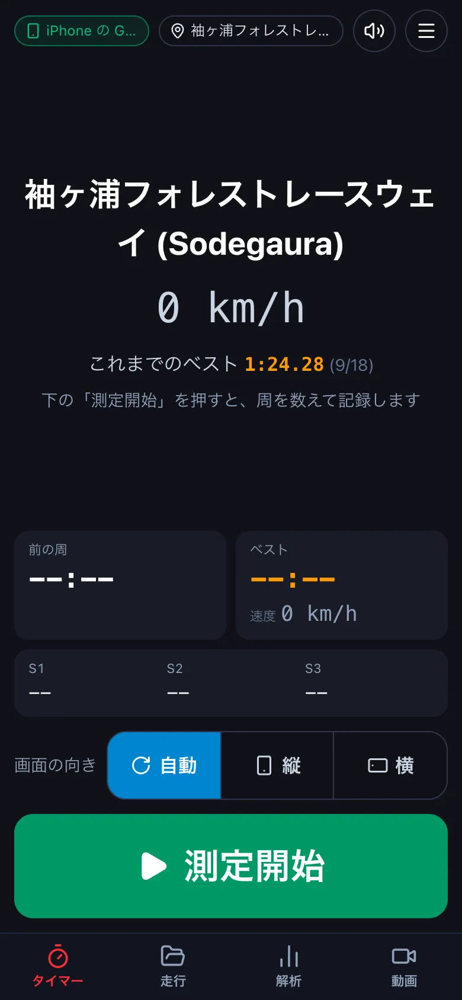
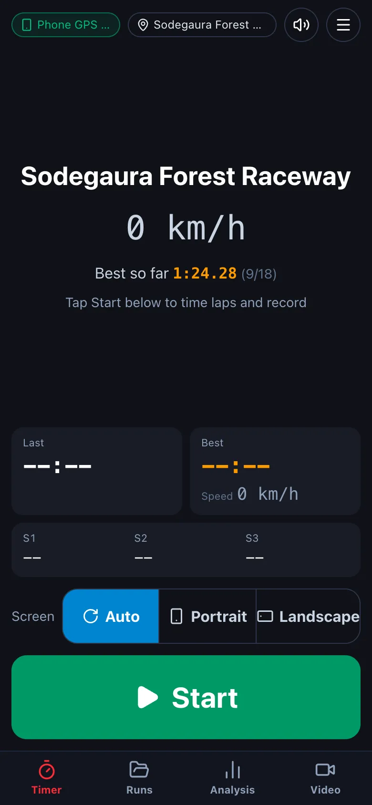
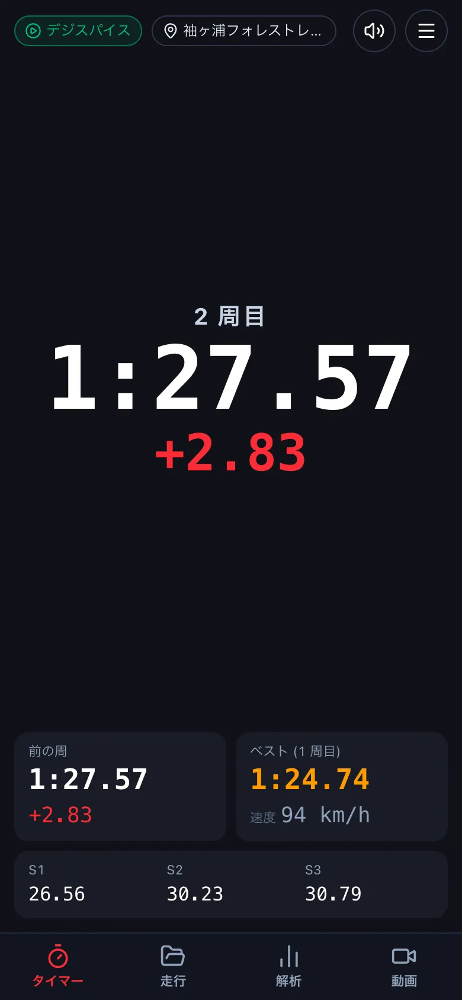
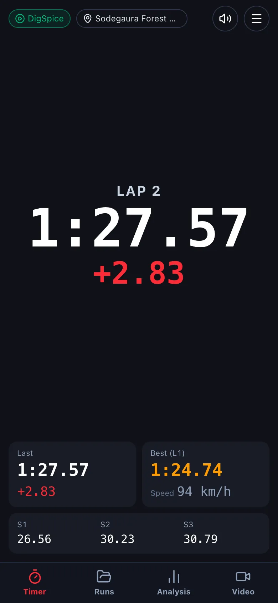
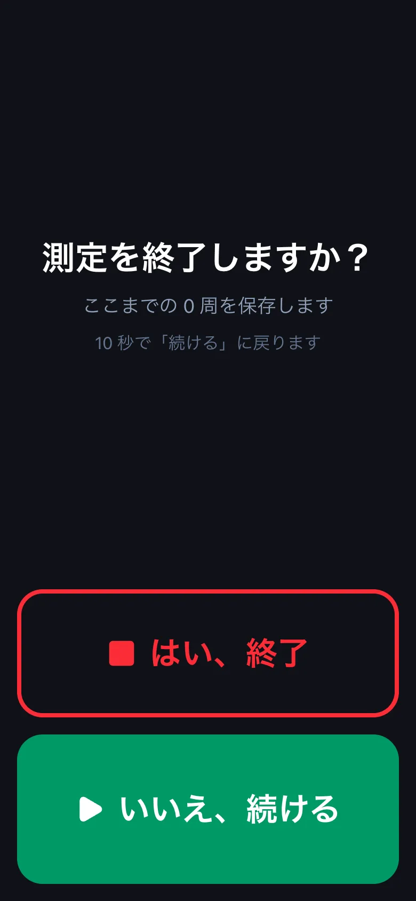
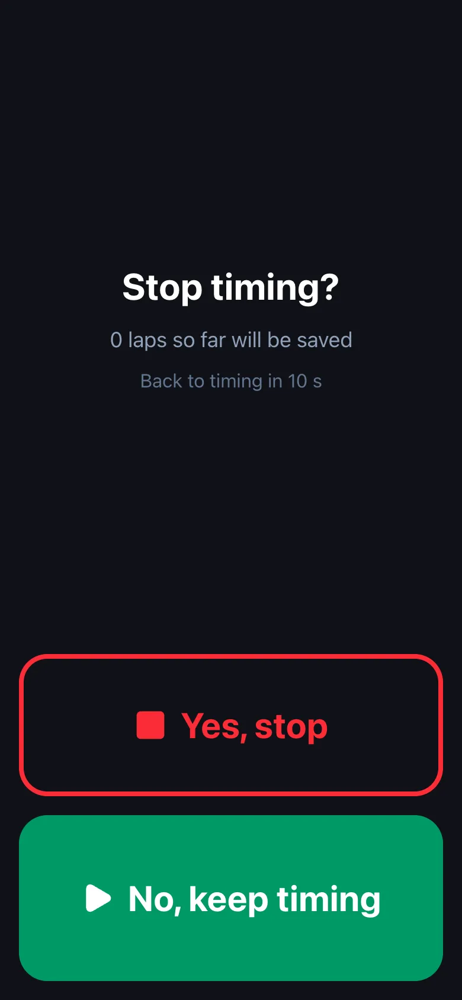

サーキットで測る (ラップタイマー)Timing at the circuit (lap timer)
スマートフォンをホルダーに付けて、周のタイムを測りながら記録します。測った走行は「走行」に入り、あとで解析・動画で見返せます。Mount the phone and it times your laps while recording. Runs go to Runs, ready to review in Analysis and Video.
-
下のタブの タイマー を押します。左上の札で、測る機器 (デジスパイス・この端末の GPS など) を確かめます。コースは近くのコースを自動で選びます (札を押すと選び直せます)。Tap Timer. The badge at the top left shows the position source (DigSpice, this phone's GPS, ...). The course is picked automatically from your location (tap it to change).


-
測定開始 を押して走り出します。計測線を越えるたびに周を数えます。周を終えると、そのタイムとベストとの差が大きく出ます。下には前の周・ベスト・セクターのタイムが出ます。Tap Start and drive. Each time you cross the line a lap is counted; the lap time and the gap to your best flash up. Last lap, best and sector times are shown below.


-
終えるときは 測定終了 → はい、終了 を押します。走っている間に誤って押しても止まらないよう、確かめの画面が出ます (10 秒で いいえ、続ける に戻ります)。To finish, tap Stop → Yes, stop. A confirmation appears so a stray touch does not stop timing (it returns to No, keep timing after 10 s).


測っている間は、画面を消さず、アプリを前に出しておいてください。画面の向きは、測定開始のときの向きで固まります (測り終えると戻ります)。Keep the screen on and the app in front while timing. The screen orientation is locked to the way the phone faces when you start, and released when you stop.
この操作は、iPhone・Android のアプリだけです (デスクトップ版・ブラウザ版にはありません)。上で iPhone か Android を選ぶと手順が出ます。This is only in the iPhone and Android apps (not in the desktop app or the browser version). Choose iPhone or Android above to see the steps.